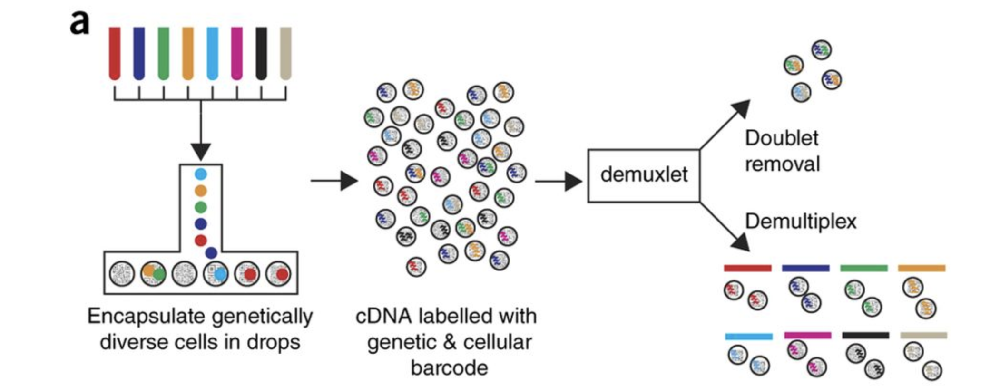
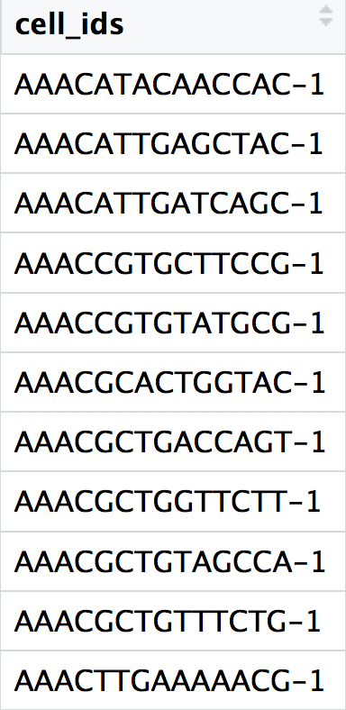
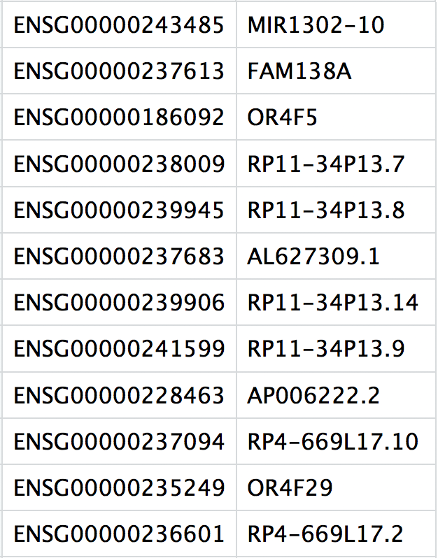

single_cell_rnaseq/
├── data
├── results
└── figuresQuality Control Setup
Approximate time: 90 minutes
Learning Objectives:
- Demonstrate how to import data and set up project for upcoming quality control analysis.
Single-cell RNA-seq: Quality control set-up

After quantifying gene expression we need to bring this data into R to generate metrics for performing QC. In this lesson we will talk about the format(s) count data can be expected in, and how to read it into python so we can move on to the QC step in the workflow. We will also discuss the dataset we will be using and the associated metadata.
Exploring the example dataset
For this workshop we will be working with a single-cell RNA-seq dataset which is part of a larger study from Kang et al, 2017. In this paper, the authors present a computational algorithm that harnesses genetic variation (eQTL) to determine the genetic identity of each droplet containing a single cell (singlet) and identify droplets containing two cells from different individuals (doublets).
The data used to test their algorithm is comprised of pooled Peripheral Blood Mononuclear Cells (PBMCs) taken from eight lupus patients, split into control and interferon beta-treated (stimulated) conditions.

Image credit: Kang et al, 2017
Raw data
This dataset is available on GEO (GSE96583), however the available counts matrix lacked mitochondrial reads, so we downloaded the BAM files from the SRA (SRP102802). These BAM files were converted back to FASTQ files, then run through Cell Ranger to obtain the count data that we will be using.
Note
The count data for this dataset is also freely available from 10X Genomics and is used in the Seurat tutorial.
Metadata
In addition to the raw data, we also need to collect information about the data; this is known as metadata. There is often a temptation to just start exploring the data, but it is not very meaningful if we know nothing about the samples that this data originated from.
Some relevant metadata for our dataset is provided below:
The libraries were prepared using 10X Genomics version 2 chemistry
The samples were sequenced on the Illumina NextSeq 500
PBMC samples from eight individual lupus patients were separated into two aliquots each.
- One aliquot of PBMCs was activated by 100 U/mL of recombinant IFN-β for 6 hours.
- The second aliquot was left untreated.
- After 6 hours, the eight samples for each condition were pooled together in two final pools (stimulated cells and control cells). We will be working with these two, pooled samples. (We did not demultiplex the samples because SNP genotype information was used to demultiplex in the paper and the barcodes/sample IDs were not readily available for this data. Generally, you would demultiplex and perform QC on each individual sample rather than pooling the samples.)
12,138 and 12,167 cells were identified (after removing doublets) for control and stimulated pooled samples, respectively.
Since the samples are PBMCs, we will expect immune cells, such as:
- B cells
- T cells
- NK cells
- monocytes
- macrophages
- possibly megakaryocytes
It is recommended that you have some expectation regarding the cell types you expect to see in a dataset prior to performing the QC. This will inform you if you have any cell types with low complexity (lots of transcripts from a few genes) or cells with higher levels of mitochondrial expression. This will enable us to account for these biological factors during the analysis workflow.
None of the above cell types are expected to be low complexity or anticipated to have high mitochondrial content.
Set up
For this workshop, we will be working within an jupyter notebook. In order to follow along you should have downloaded the python project.
Important
If you haven’t done this already, the project can be accessed using TODO.
TODO: download instructions
Project organization
One of the most important parts of research that involves large amounts of data, is how best to manage it. We tend to prioritize the analysis, but there are many other important aspects of data management that are often overlooked in the excitement to get a first look at new data. The HMS Data Management Working Group, discusses in-depth some things to consider beyond the data creation and analysis.
One important aspect of data management is organization. For each experiment you work on and analyze data for, it is considered best practice to get organized by creating a planned storage space (directory structure). We will do that for our single-cell analysis.
Look inside your project space and you will find that a directory structure has been setup for you:
New script
Next, open a new Jupyter Notebook file (ipynb), and start with some comments to indicate what this file is going to contain.
We will follow that up the necessary libraries to run the code for this script.
# July/August 2021
# HBC single-cell RNA-seq workshop
# Single-cell RNA-seq analysis - QC
import scanpy as sc
import warnings
warnings.simplefilter(action='ignore',
category=FutureWarning)Loading single-cell RNA-seq count data
Regardless of the technology or pipeline used to process your raw single-cell RNA-seq sequence data, the output with quantified expression will generally be the same. That is, for each individual sample you will have the following three files:
- A file with the cell IDs, representing all cells quantified
- A file with the gene IDs, representing all genes quantified
- A matrix of counts per gene for every cell
We can explore these files by clicking the data/ctrl_raw_feature_bc_matrix folder:
1. barcodes.tsv
This is a text file which contains all cellular barcodes present for that sample. Barcodes are listed in the order of data presented in the matrix file (i.e. these are the column names).

2. features.tsv
This is a text file which contains the identifiers of the quantified genes. The source of the identifier can vary depending on what reference (i.e. Ensembl, NCBI, UCSC) you use in the quantification methods, but most often these are official gene symbols. The order of these genes corresponds to the order of the rows in the matrix file (i.e. these are the row names).

3. matrix.mtx
This is a text file which contains a matrix of count values. The rows are associated with the gene IDs above and columns correspond to the cellular barcodes. Note that there are many zero values in this matrix.

Loading this data into R requires us to use functions that allow us to efficiently combine these three files into a single count matrix. However, instead of creating a regular matrix data structure, the functions we will use create a sparse matrix to reduce the amount of memory (RAM), processing capacity (CPU) and storage required to work with our huge count matrix.
Scanpy allows us to easily read in the data by using the read_10x_mtx() function.
Reading in a single sample
After processing 10X data using its proprietary software Cell Ranger, you will have an outs directory (always). Within this directory you will find a number of different files including the files listed below:
web_summary.html: report that explores different QC metrics, including the mapping metrics, filtering thresholds, estimated number of cells after filtering, and information on the number of reads and genes per cell after filtering.- BAM alignment files: files used for visualization of the mapped reads and for re-creation of FASTQ files, if needed
filtered_feature_bc_matrix: folder containing all files needed to construct the count matrix using data filtered by Cell Rangerraw_feature_bc_matrix: folder containing all files needed to construct the count matrix using the raw unfiltered data
While Cell Ranger performs filtering on the expression counts (see note below), we wish to perform our own QC and filtering because we want to account for the biology of our experiment/biological system. Given this we are only interested in the raw_feature_bc_matrix folder in the Cell Ranger output.
Filtered matrix
Why do we not use the filtered_feature_bc_matrix folder? The filtered_feature_bc_matrix uses internal filtering criteria by Cell Ranger, and we do not have control of what cells to keep or abandon.
The filtering performed by Cell Ranger when generating the filtered_feature_bc_matrix is often good; however, sometimes data can be of very high quality and the Cell Ranger filtering process can remove high quality cells. In addition, it is generally preferable to explore your own data while taking into account the biology of the experiment for applying thresholds during filtering. For example, if you expect a particular cell type in your dataset to be smaller and/or not as transcriptionally active as other cell types in your dataset, these cells have the potential to be filtered out. However, with Cell Ranger v3 they have tried to account for cells of different sizes (for example, tumor vs infiltrating lymphocytes), and now may not filter as many low quality cells as needed.
With a single sample, we can generate an AnnData object:
ad = sc.read_10x_mtx("../data/ctrl_raw_feature_bc_matrix/")
adAnnData object with n_obs × n_vars = 737280 × 33538
var: 'gene_ids', 'feature_types'We can see from this callout that we have 737,280 cells and 33,538 genes which is clearly too many cells! So we can do some very low level filtration to remove any cells that we know are “empty”.
The filter_cells() function specifies the minimum number of genes that need to be detected per cell. This argument will filter out poor quality cells that likely just have random barcodes encapsulated without any cell present. Usually, cells with less than 100 genes detected are not considered for analysis.
sc.pp.filter_cells(ad, min_genes=100)
adAnnData object with n_obs × n_vars = 15688 × 33538
obs: 'n_genes'
var: 'gene_ids', 'feature_types'Immediately we can see that we are now left with 15,688 cells.
Anatomy of AnnData
There are three main “slots” with the AnnData object:
obs= metadata for each cellvar= metadata for each geneXandLayers= count matrices
Cell metadata
To being, we will not have much metadata in our scanpy object beyond the cell barcodes themselves. When we ran the filter_cells() function, it automatically calculated the number of genes with non-zero expression for each cell and stored it in a column titled n_genes:
ad.obs.head()| n_genes | |
|---|---|
| AAACATACAATGCC-1 | 874 |
| AAACATACATTTCC-1 | 896 |
| AAACATACCAGAAA-1 | 725 |
| AAACATACCAGCTA-1 | 979 |
| AAACATACCATGCA-1 | 362 |
We can ourselves add additional metadata in the .obs with relevant information (sample, sex, age, timepoint, etc). In our case, we can update the sample information to keep track that these cells came from our ctrl sample.
ad.obs["sample"] = "ctrl"
ad.obs.head()| n_genes | sample | |
|---|---|---|
| AAACATACAATGCC-1 | 874 | ctrl |
| AAACATACATTTCC-1 | 896 | ctrl |
| AAACATACCAGAAA-1 | 725 | ctrl |
| AAACATACCAGCTA-1 | 979 | ctrl |
| AAACATACCATGCA-1 | 362 | ctrl |
Gene metadata
Similar to how there is metadata for each of our cells, we can also include information about each of the genes which will come in handy in downstream steps.
ad.var.head()| gene_ids | feature_types | |
|---|---|---|
| MIR1302-2HG | ENSG00000243485 | Gene Expression |
| FAM138A | ENSG00000237613 | Gene Expression |
| OR4F5 | ENSG00000186092 | Gene Expression |
| AL627309.1 | ENSG00000238009 | Gene Expression |
| AL627309.3 | ENSG00000239945 | Gene Expression |
Counts matrix
By default, the counts matrix will be stored in a format known as a “sparse matrix” which is a way store large matrix data in an efficient way.
ad.X<15688x33538 sparse matrix of type '<class 'numpy.float32'>'
with 9243628 stored elements in Compressed Sparse Column format>To access each value in the first 5 columns and rows, we can use the todense() function to get a preview of what is going on:
ad.X[1:5, 1:5].todense()matrix([[0., 0., 0., 0.],
[0., 0., 0., 0.],
[0., 0., 0., 0.],
[0., 0., 0., 0.]], dtype=float32)The values are primarily 0’s which is line with our expenctation of this zero-inflated data.
Layers
The .X is considered to be the default layer for calculations. Since we will later normalize our data, we want to ensure that we store our raw counts in a place we can access it later by making use of Layers where we can store multiple different count matrices and access them at will. So to start, we are going to stash away this matrix.
We will also specify the copy() function to ensure that the data is copied over, and that it doesn’t just point to .X (which may change in the future).
ad.layers["counts"] = ad.X.copy()
adAnnData object with n_obs × n_vars = 15688 × 33538
obs: 'n_genes', 'sample'
var: 'gene_ids', 'feature_types'
layers: 'counts'This is reflected in our AnnData object which now contains our “counts” as a layer.
ad.layers["counts"]<15688x33538 sparse matrix of type '<class 'numpy.float32'>'
with 9243628 stored elements in Compressed Sparse Column format>Reading in multiple samples with a for loop
In practice, you will likely have several samples that you will need to read in data for, and that can get tedious and error-prone if you do it one at a time. So, to make the data import into python more efficient we can use a for loop, which will iterate over a series of commands for each of the inputs given and create AnnData objects for each of our samples.
Today we will use it to iterate over the two sample folders and execute two commands for each sample as we did above for a single sample -
- Generate list of sample names
- Read in the count data (
read_10x_mtx()) - Filter out the very low quality data
- Add the sample information to the metadata
- Store AnnData to a dictionary (for later merging)
Go ahead and copy and paste the code below into your script and then run it.
sample_names = ["ctrl", "stim"]
dict_ad = dict()
for sample in sample_names:
# Get the path for each sample
path_data = f"../data/{sample}_raw_feature_bc_matrix"
print(path_data)
# Load AnnData object
# Filter and add sample metadata
ad = sc.read_10x_mtx(path_data)
sc.pp.filter_cells(ad, min_genes=100)
ad.obs["sample"] = sample
dict_ad[sample] = ad../data/ctrl_raw_feature_bc_matrix
../data/stim_raw_feature_bc_matrixNow we take a look at dict_ad to see if we sucessfully loaded in both of our sample. We expect to see two distinct AnnData objects in the dictionary.
dict_ad{'ctrl': AnnData object with n_obs × n_vars = 15688 × 33538
obs: 'n_genes', 'sample'
var: 'gene_ids', 'feature_types',
'stim': AnnData object with n_obs × n_vars = 15756 × 33538
obs: 'n_genes', 'sample'
var: 'gene_ids', 'feature_types'}Merging sample together
Next, we need to merge these objects together into a single object. This will make it easier to run the QC steps for both sample groups together and enable us to easily compare the data quality for all the samples.
We can use the concatenate() function to do this. We also specify several arguments to ensure the merge is done correctly with:
- join
- batch_key
- batch_categories
- index_unique
# Pooling together the samples
adata = sc.AnnData.concatenate(
*list(dict_ad.values()), # the asterisk unpacks the list
join='outer',
batch_key = 'sample',
batch_categories = sample_names,
index_unique = '_'
)
adataAnnData object with n_obs × n_vars = 31444 × 33538
obs: 'n_genes', 'sample'
var: 'gene_ids', 'feature_types'If we look at the metadata of the merged object we should be able to see the correct samples in the metadata:
adata.obs.head()
adata.obs.tail()| n_genes | sample | |
|---|---|---|
| TTTGCATGCTAAGC-1_stim | 545 | stim |
| TTTGCATGGGACGA-1_stim | 518 | stim |
| TTTGCATGGTGAGG-1_stim | 469 | stim |
| TTTGCATGGTTTGG-1_stim | 432 | stim |
| TTTGCATGTCTTAC-1_stim | 438 | stim |
Save
# adata.write_h5ad("../results/03_merge.h5ad")